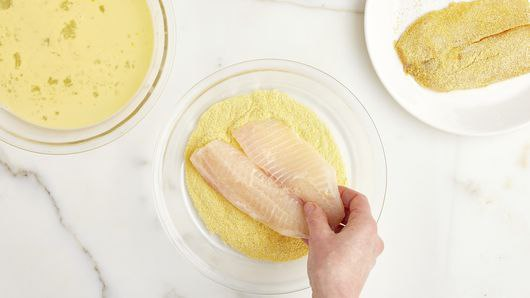

1.Beat egg in shallow dish or pie pan until well blended. Stir in milk. Place flour in another shallow dish. Dip fish fillets in egg mixture; dip in flour to coat.

Heat oil in 12-inch skillet over medium-high heat until hot. Add fish; cook 5 to 7 minutes or until golden brown and fish flakes easily with fork, turning once. If desired, season to taste with salt and pepper.